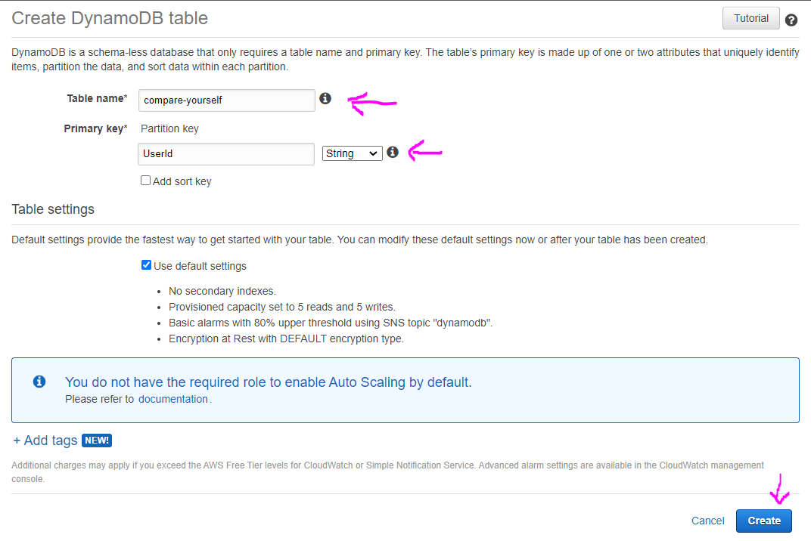
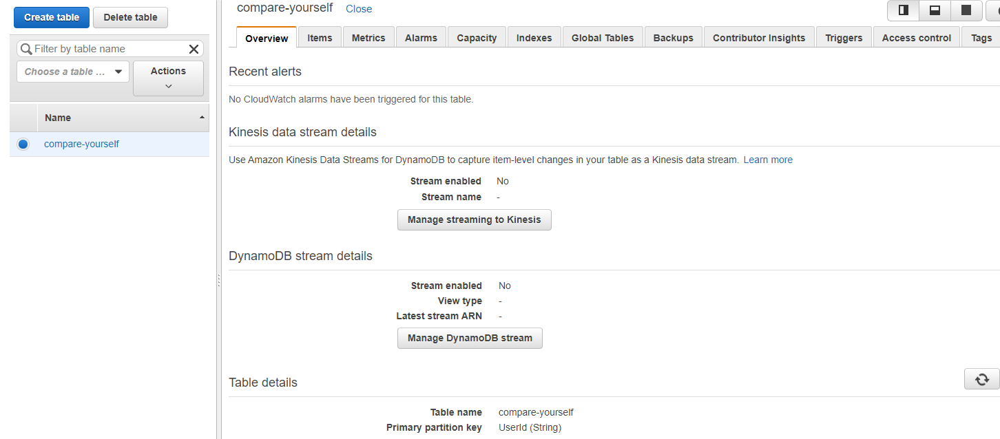
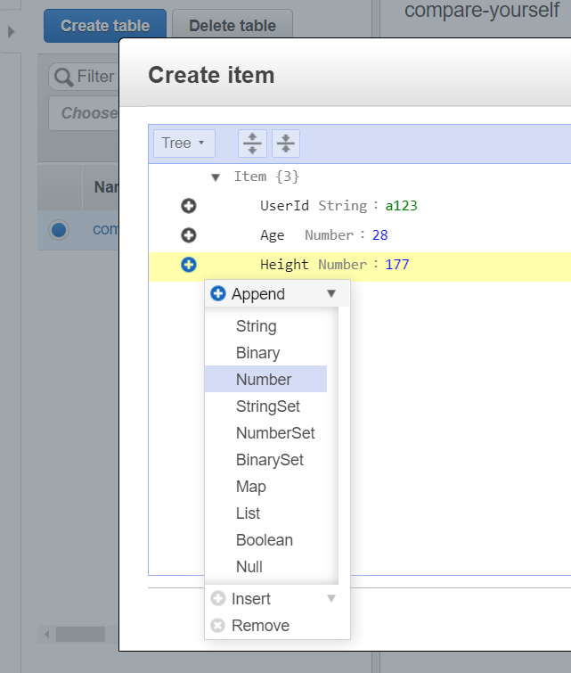
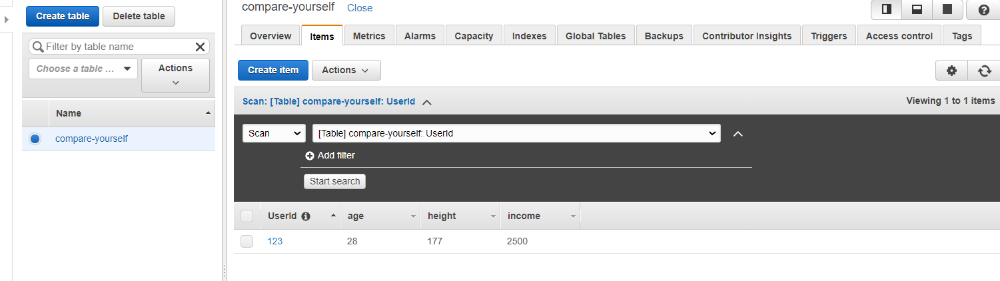
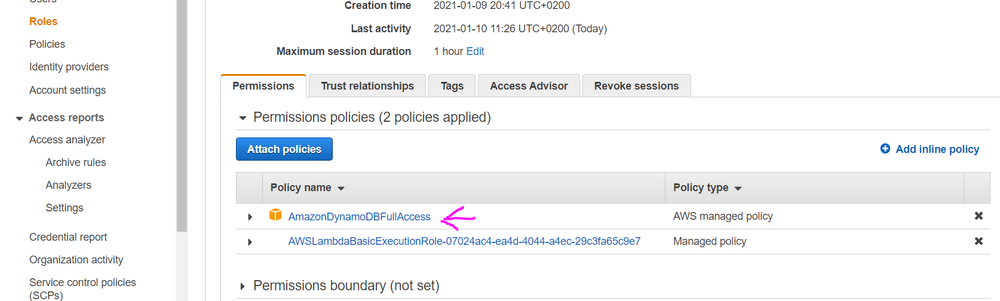

Give a Table name and Partition key and click Create button
You will get to this details view after the table is created
Now to create new item (row in the db) click the Items tab, then Create item button. In this example we will give dummy UserId manually and to add more columns click the plus sign, then Append and select the type of value you want to add and click the Save button
Now we can see the data in our table
Now after we have database we can access it in lambda function. For more info on aws-sdk check in common folder
This is how our lambda function should look like:
const AWS = require('aws-sdk');
const dynamodb = new AWS.DynamoDB({
region: 'us-east-2',
apiVersion: '2012-08-10',
});
exports.handler = (event, context, callback) => {
const params = {
Item: {
UserId: {
S: '1234a', // S stands for string
},
Age: {
N: '29', // N stands for number
},
Height: {
N: '181', // numbers we also send as string
},
Income: {
N: '2300',
},
},
TableName: 'compare-yourself',
};
dynamodb.putItem(params, function (err, data) {
if (err) {
console.log(err);
callback(err);
} else {
console.log(data);
callback(null, data);
}
});
};
But this setup still will not work, because by default lambda function has no rights to store data, for its role it has only logging rights. To add this kind of rights we will need IAM service
Go to AWS managment console and search for IAM service. Click Roles, click the role name which our lambda function is using, click Attach policies search for dynamo and check the box for AmazonDynamoDBFullAccess and click Attach policy. Now you should see this policy also added for this role
Now if you run Test on the lambda function to execute it, you should see the data in DynamoDB
And if you followed the APIGateway Integration Request setup, you can get dynamic values like this, not just hardcoded ones
// this is what we have for the Mapping template in the Integration Response for our APIGateway service
#set($inputRoot = $input.path('$'))
{
"age" : "$inputRoot.age",
"height" : "$inputRoot.height",
"income" : "$inputRoot.income"
}
// note that values are double quotes to have them as strings, because for DynamoDB we always pass values as strings
// Dynamo is handling the conversion to numbers
const AWS = require('aws-sdk');
const dynamodb = new AWS.DynamoDB({
region: 'us-east-2',
apiVersion: '2012-08-10',
});
exports.handler = (event, context, callback) => {
const params = {
Item: {
UserId: {
S: 'user_' + Math.random(),
},
Age: {
N: event.age,
},
Height: {
N: event.height,
},
Income: {
N: event.income,
},
},
TableName: 'compare-yourself',
};
dynamodb.putItem(params, function (err, data) {
if (err) {
console.log(err);
callback(err);
} else {
console.log(data);
callback(null, data);
}
});
};